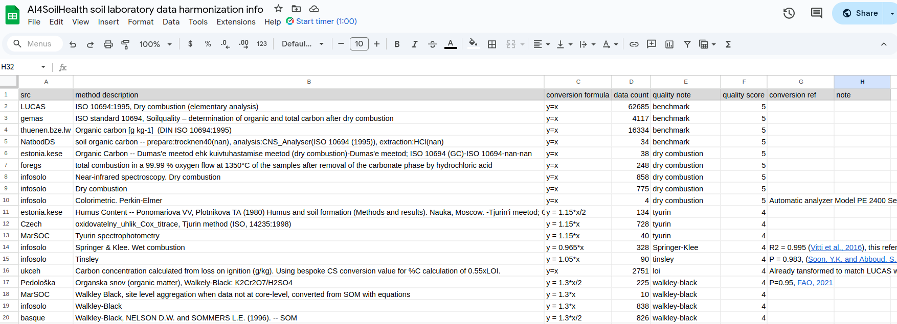

This section outlines the detailed procedures used to import and bind all soil laboratory and site data. The major components of the process are shown in Figure 1, and are further explained in the corresponding subsections.
Figure 1: Key components and workflow for harmonizing point soil data.
Raw Soil Data
Point soil datasets are organized systematically to facilitate easy access and management. All raw data files are stored in a main folder named “raw data”. Within this folder, there are sub-folders for each country or region, named using the NUTS0 code (e.g., DE for Germany, UK for the United Kingdom, etc.).
Harmonization Sheet
The Google Sheet serves as the central platform for managing and documenting all soil data. It consists of multiple sheets, each serving specific functions:
Overview Sheet: High-level information including data sources, data availability across sources and properties, and the spatio-temporal distribution of the entire dataset.
Property Sheets: Each sheet is named after a soil property involved in the harmonization process, see the example of soc in Figure 2 sheet.
src: Indicates the origin or source from which the data is obtained.
method description: Provides the original description of the measurement method as documented, detailing how the data was measured.
data count: The number of data entries available for this measurement method from the specified source.
quality note: A summarized interpretation of the method description, prepared to assist in assigning an appropriate quality flag.
quality score: A designated score indicating the reliability of the data, helping determine whether it is suitable for use.
conversion formula: Specifies any necessary conversion formula to standardize the data.
conversion reference: Cites the literature or source that supports the choice of the conversion formula.
notes: Any supplementary information or remarks relevant to the data or its context.

Figure 2: soc harmonization sheet
Code
The code section includes Jupyter notebooks used for importing, quality control, harmonizing, and binding datasets into a single harmonized soil dataset. For the complete code, visit the GitHub repository.
Format Standardization
The standardization of format (e.g., arrangement of rows/columns, naming conventions) is done individually for each dataset. Here’s an example using the GEMAS dataset.
First import necessary libraries and define input and output paths.
Code
# Initialization Cell: Import libraries and set pathsimport pandas as pdimport osimport sysimport numpy as npos.environ['USE_PYGEOS'] ='0'import geopandas as gpdfrom eumap.misc import find_files, nan_percentile, GoogleSheet, ttprintmodule_path ='/mnt/lacus/ai4sh_data.harmo/soil-data/code/'# Add the folder containing harmonization_tool_kit.py to the system pathif module_path notin sys.path: sys.path.append(module_path)print(os.listdir(module_path))from harmonization_tool_kit import plot_subplots_histogram, conversion_and_score, plot_spatial_distributioninput_path ='/mnt/lacus/ai4sh_data.harmo/raw_data'output_path ='/mnt/lacus/ai4sh_data.harmo/data_v2'
ModuleNotFoundError: No module named 'geopandas'
Then load GEMAS data, check its format and content.
When converting GEMAS dataset to standard format, a temporary DataFrame is created to store the harmonized version of the GEMAS dataset. The soil property data is systematically organized into three components for each property available in the GEMAS dataset: 1. measured values; 2. measurement methods; 3. units.
Code
temp = pd.DataFrame()temp['ph.cacl2'] = gema['pH_CaCl2'] # unit info is not necessary for pH, therefore not recordedtemp['ph.cacl2_method'] ='0.01 M CaCl2'temp['clay'] = gema['clay']temp['silt'] = gema['silt']temp = temp[['clay','silt']].apply(pd.to_numeric)temp['sand'] =100-temp['clay']-temp['silt']temp['clay_unit'] ='%'temp['sand_unit'] ='%'temp['silt_unit'] ='%'temp['clay_method'] ='<2 μm, DIN-EN 725-5 (04/2007) / ISO 13320 (10/2009) bylaser diffractometry.'temp['sand_method'] ='20-2000 μm, DIN-EN 725-5 (04/2007) / ISO 13320 (10/2009) bylaser diffractometry.'temp['silt_method'] ='2-20 μm, DIN-EN 725-5 (04/2007) / ISO 13320 (10/2009) bylaser diffractometry.'temp['soc'] = gema['TOC'] temp['soc_unit'] ='%'temp['soc_method'] ='ISO standard 10694, Soilquality – determination of organic and total carbon after dry combustion'temp['cec'] = gema['CEC'] # meq/100g = cmol/kgtemp['cec_unit'] ='meq+/100 g'temp['cec_method'] ='silver-thiourea method'temp['lc_survey'] = gema['TYPE']temp.loc[temp['lc_survey']=='Gr','lc_survey'] ='permanent grassland'temp.loc[temp['lc_survey']=='Ap','lc_survey'] ='arable land'
NameError: name 'gema' is not defined
Another key component is meta information, which contains key details such as the sampling location, time, depth, NUTS0 region, reference information (to identify the data source), and unique identifiers (used within each data source to distinguish individual measurements).
Code
temp['lat'] = gema['YCOO'] # coordinatestemp['lon'] = gema['XCOO']temp['time'] =2008# time, GEMAS soil survey is conducted in 2008temp['hzn_top'] = gema['UHDICM'] # top and bottom depth of the surveyed soil layerstemp['hzn_btm'] = gema['LHDICM']temp['ref'] ='gemas'# reference columntemp['id'] = gema['ID'] # id used for each "ref"# Map country codes to NUTS0country_to_nuts0 = {'GER': 'DE', 'SKA': 'SK', 'EST': 'EE', 'LIT': 'LT', 'NOR': 'NO','PTG': 'PT', 'POL': 'PL', 'SWE': 'SE', 'DEN': 'DK', 'ITA': 'IT','FRA': 'FR', 'FIN': 'FI', 'UKR': 'UA', 'CRO': 'HR', 'HEL': 'EL','HUN': 'HU', 'SPA': 'ES', 'CYP': 'CY', 'BEL': 'BE', 'UNK': 'UK','LAV': 'LV', 'SIL': 'SI', 'BUL': 'BG', 'SRB': 'RS', 'CZR': 'CZ','BOS': 'BA', 'FOM': 'MK', 'AUS': 'AT', 'NEL': 'NL', 'SLO': 'SK','IRL': 'IE', 'MON': 'ME', 'LUX': 'LU'}temp['nuts0'] = gema['COUNTRY'] temp['nuts0'] = gema['COUNTRY'].map(country_to_nuts0)
NameError: name 'gema' is not defined
Before saving, the data is preliminarily cleaned and filtered using metadata to ensure all measurements have valid location, time, and depth information. Additionally, only measurements taken after the year 2000 are retained, aligning with the temporal scope of our modeling and mapping efforts.
Code
print(f'{len(temp)} data in total')na = temp['time'].isna().sum()print(f'{na} data with no time info')na = temp.loc[temp['time']<2000]print(f'{len(na)} data sampled before year 2000')if'hzn_dep'in temp.columns: na = temp['hzn_dep'].isna().sum()else: na =len(temp[temp['hzn_btm'].isna() | temp['hzn_top'].isna()])print(f'{na} data with no depth info')na =len(temp[temp['lat'].isna() | temp['lon'].isna()])print(f'{na} data with no coordinate info')if'hzn_dep'in temp.columns: temp = temp.dropna(subset=['time','hzn_dep','lat','lon'])else: temp = temp.dropna(subset=['time','hzn_btm','hzn_top','lat','lon'])temp = temp.loc[temp['time']>=2000]print(f'{len(temp)} data left in total after filtering')
0 data in total
KeyError: 'time'
Finally, ensure that the data is saved securely in the correct folder.
Once all raw datasets are harmonized into a standard format, they will be merged into a single, unified dataset for further checks and harmonization.
The standardized datasets are saved using the naming pattern {raw dataset name}_harmonized_l1.pq, with which we could easily parse all the standardized datasets and then merge them together.
Code
data_path ='/mnt/lacus/ai4sh_data.harmo/data_v2'# define path of operation# parse the paths to all standarized datasetsdef find_soil_dataset(directory): listt = []for dirpath,_,filenames in os.walk(directory):for f in filenames:if'harmonized_l1.pq'in f: listt.append(os.path.abspath(os.path.join(dirpath, f)))return listtpath_list = find_soil_dataset(data_path)data_list = []# read in all standarized datasets and mergefor ip in path_list: temp = pd.read_parquet(ip) #, dtype=dtype_dictprint('Dataset: ', ip.split('/')[-1].split('_')[0], 'with ', len(temp.columns), ' data records.') data_list.append(temp)print() data = pd.concat(data_list)# unify the data format in each columnmeta_cols = ['id', 'lat', 'lon', 'time', 'hzn_top', 'hzn_btm', 'ref', 'nuts0'] # columns to indicate meta informationprop_cols = ['soc', 'carbonates', 'total.n', 'ph.h2o', 'ph.cacl2', 'bulk.density.tot', 'bulk.density.fe','clay', 'silt', 'sand', 'extractable.p', 'extractable.k','cec','ec','coarse.mass','coarse.vol'] # columns to indicate property valuesunit_cols = [i+'_unit'for i in prop_cols] # columns to indicate the unit information for each propertymtod_cols = [i+'_method'for i in prop_cols] # columns to indicate the method used for each measurementsnum_cols = ['lat', 'lon', 'time', 'hzn_top', 'hzn_btm'] + prop_colsfor col in num_cols: data[col] = pd.to_numeric(data[col], errors='coerce') str_cols = ['id'] + unit_cols + mtod_colsfor col in str_cols: data[col] = data[col].astype(str)# show some example rows sampled_rows = ( data[['ref','id']+prop_cols+unit_cols+mtod_cols].groupby('ref') .apply(lambda x: x.sample(n=1)) # Sample one row per 'ref' group .sample(n=5, random_state=42) # Randomly choose 5 rows from the sampled groups .reset_index(drop=True) # Reset index for a clean DataFrame)sampled_rows
ImportError: Unable to find a usable engine; tried using: 'pyarrow', 'fastparquet'.
A suitable version of pyarrow or fastparquet is required for parquet support.
Trying to import the above resulted in these errors:
- Missing optional dependency 'pyarrow'. pyarrow is required for parquet support. Use pip or conda to install pyarrow.
- Missing optional dependency 'fastparquet'. fastparquet is required for parquet support. Use pip or conda to install fastparquet.
Check once again on the validity of meta columns, if not, drop the corresponding rows.
Code
# time infoprint('Check time info')old_time = data.loc[data['time']<2000]print(f'{len(old_time)} data sampled before year 2000')na_time = data.loc[data['time'].isna()]print(f'{len(na_time)} data with invalid temporal information')print()# coordinateprint('Check coordinates info')len_ori =len(data)inf_condition = data['lat'] >75zero_condition = data['lat'] <=0nan_condition = (data['lat'].isna() | data['lon'].isna())combined_condition = nan_condition | inf_condition | zero_conditionprint(f"{nan_condition.sum()} rows with nan coordinates, from {data.loc[nan_condition, 'ref'].unique()}")print(f"{inf_condition.sum()} rows with inf coordinates, from {data.loc[inf_condition, 'ref'].unique()}")print(f"{zero_condition.sum()} rows with zero coordinates, from \n{data.loc[zero_condition, 'ref'].unique()}")data = data.loc[~combined_condition].reset_index(drop=True)print(f"Original length was {len_ori}, cleaned length is {len(data)}")print()# depthprint('Check depth info')data.loc[data['hzn_dep'].isna(),'hzn_dep'] = (data.loc[data['hzn_dep'].isna(),'hzn_top']+data.loc[data['hzn_dep'].isna(),'hzn_btm'])/2# derive mean depth info from bottom and top depth of layersdata = data.drop(columns = ['hzn_top','hzn_btm'])na_depth = data.loc[data['hzn_dep'].isna()]print(f'{len(na_depth)} data with invalid depth information')print()
Check time info
NameError: name 'data' is not defined
Drop duplicates and save the data.
Code
data_cleaned = data.drop_duplicates()duplicates = data.duplicated(keep=False)duplicated_df = data[duplicates]dup_src = duplicated_df['ref'].unique()print(f'{len(duplicated_df)} duplicated rows, from {dup_src} datasets')print(f'left {len(data_cleaned)} rows from origianl {len(data)} rows')data.to_parquet(f'{data_path}/soil.showcase_meta.cleaned_l2.pq')
NameError: name 'data' is not defined
Quality control
Quality control refers to the harmonization of measured values, involving the cleaning of erroneous and imcomplete data, conversion of data to a consistent unit, removing measurements that are neither comparable nor convertible to benchmark, and applying conversion formulas to transform convertible soil data to align with the bemchmark. The harmonization is performed property by property, using LUCAS as the benchmark. Below is an example of harmonizing soc data.
Code
# Initialize the paths, variables and read in the merged datasetprop ='soc'unit =f'{prop}_unit'mtod =f'{prop}_method'data_path ='/mnt/lacus/ai4sh_data.harmo/data_v2'data = pd.read_parquet(f'{data_path}/soil.showcase_meta.cleaned_l2.pq')data.loc[:, :] = data.replace('None','nan')none_exists = (data =='None').any().any() # make sure all the invalid values are represented by 'nan'sampled_rows = ( data[['ref', 'id', 'nuts0', prop, unit, mtod]].groupby('ref') .apply(lambda x: x.sample(n=1)) # Sample one row per 'ref' group .sample(n=5, random_state=42) # Randomly choose 5 rows from the sampled groups .reset_index(drop=True) # Reset index for a clean DataFrame)sampled_rows
ImportError: Unable to find a usable engine; tried using: 'pyarrow', 'fastparquet'.
A suitable version of pyarrow or fastparquet is required for parquet support.
Trying to import the above resulted in these errors:
- Missing optional dependency 'pyarrow'. pyarrow is required for parquet support. Use pip or conda to install pyarrow.
- Missing optional dependency 'fastparquet'. fastparquet is required for parquet support. Use pip or conda to install fastparquet.
Firstly, we standardize all measurements to g/kg for soc values.
Code
# check all the possible units of soc measurements we haveprint(f'{prop} units: {data[unit].unique()}')# convert % to g/kgdata.loc[data[unit].isin(['%', '% KA']),prop] = data.loc[data[unit].isin(['%', '% KA']),prop]*10# % -> g/kg# now check which data source has unit = 'nan' mask_unit = (data[unit]=='nan') & (data[prop].notna())nan_ref = data.loc[mask_unit,'ref'].unique().tolist()print(f'nan unit data from {nan_ref}')# let's check the distribution of the nan unit data, compare them with LUCAS, to see what's the unit of themplot_subplots_histogram(data, prop, 'ref', filt = nan_ref+['LUCAS'], value_range=None, bins=30)print('Based on the range of values, it appears that the unit for the nan unit data is %.')mask_unit = (data[unit]=='nan') & (data[prop].notna())data.loc[mask_unit,prop] = data.loc[mask_unit,prop]*10# transform to g/kg
NameError: name 'data' is not defined
Then we use the property harmonization information from Harmonization sheet to assign quality score and convert the convertable/comparable values to be comparable to LUCAS soc values.
Code
# read in the soc harmonization sheetkey_file ='/mnt/lacus/ai4sh_data.harmo/gaia-319808-913d36b5fca4.json'url ='https://docs.google.com/spreadsheets/d/1J652XU_VWmbm1uLmeywlF6kfe7fUD5aJrfAIK97th1E/edit#gid=1254448729'gsheet = GoogleSheet(key_file, url)mdf = gsheet.soc# Use this function to convert all convertible measurements and assign quality scores to each measurement. # After the conversion, a new quality score column 'soc_qa' is added.dff = conversion_and_score(data, mdf, prop) sampled_rows = ( dff[['ref', 'id', 'time','hzn_dep', f'{prop}_original', prop, f'{prop}_qa',mtod,'conversion formula', 'conversion ref',unit]].groupby('ref') .apply(lambda x: x.sample(n=1)) # Sample one row per 'ref' group .sample(n=5, random_state=42) # Randomly choose 5 rows from the sampled groups .reset_index(drop=True) # Reset index for a clean DataFrame)sampled_rows
NameError: name 'GoogleSheet' is not defined
Once the conversion is complete, the data is cleaned based on its possible range. For soc, values must be positive and less than 1000.
Code
# Define the property column, assuming it's in a variable `prop`lower_limit, upper_limit =0, 1000# Remove negative values (below lower limit) and print summarynan_counts_lower = dff[dff[prop]< lower_limit].groupby('ref').size()print("\nNaN dff count per 'ref' from negative values:")for ref, count in nan_counts_lower.items():print(ref, count)# Remove values above the upper limit and print summarynan_counts_upper = dff[dff[prop]> upper_limit].groupby('ref').size()print("\nNaN dff count per 'ref' from values exceeding upper limit:")for ref, count in nan_counts_upper.items():print(ref, count)dff.loc[dff[prop] < lower_limit, prop] = np.nandff.loc[dff[prop] > upper_limit, prop] = np.nanplot_subplots_histogram(dff, prop, 'ref', filt=None, value_range=[lower_limit, upper_limit], bins=40)
NameError: name 'dff' is not defined
Measurements with a quality score below 2 (indicating they are not comparable to LUCAS) are set to NaN. Finally, all unnecessary columns are dropped, keeping only the quality score column.
The harmonized soil point dataset is presented in a tabular format. Each row in the table represents a sample collected from a specific depth and location in a given year. The table is organized into columns that store two main types of information about each sample:
Meta Information
lat and lon: Latitude and longitude of the sample location.
time: Sampling year (finest granularity available).
hzn_dep: Derived from the mean of top and bottom of the sampled soil horizon layer.
ref: Name of the data source.
id: Unique sample identifier; cross-reference with ref.
Each measurement is assigned a quality score ranging from 0 to 5, where 5 represents the highest quality. This score reflects the comparability of the measurement to corresponding LUCAS data. Details of quality score see in Harmonization sheet - ReadMe.